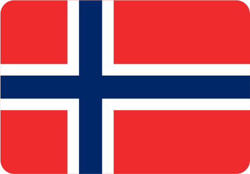

Svenskene har gitt verden ABBA, IKEA og, selvfølgelig, snusen. Nordmenn omfavner det som om det var brunost, men hva med Island? Er det en hemmelig snusning som foregår i islendingenes bakgårder?
I praksis jobber det finske helsedepartementet hardt for å sikre at færre enn 5 prosent av den voksne befolkningen i Finland bruker snus og lignende produkter innen 2030. Allerede i 1995, da Finland ble medlem av EU, ble det forbudt å selge snus i landet. I dag, i 2023, er Sverige det eneste EU-landet der det er tillatt å selge snus.
Finland er på en tydelig kurs mot en snusfri framtid, og det ser ut til at de holder fast ved sitt engasjement for en tobakksfri befolkning.
I Norge røykte 7 prosent av befolkningen daglig i 2022. Det tilsvarer omtrent like mange som de som elsker brunost som pålegg.
Bildet hentet fra UX-wing ©Sverige har redusert daglig røyking siden 2004, med kun 6% som røyker daglig i 2022.
Danskene overrasker, med 23% som bruker nikotinprodukter, og trenden er nå å bytte ut sigaretten med e-sigaretter
I Finland røykte rundt 12 prosent av menneskene i alderen 20-64 daglig i 2020, men røyking har gått ned, spesielt blant menn.
På Island røykte 9% av befolkningen sigaretter i 2022, men det har vært en nedgang i salg av sigaretter og en økning i bruk av elektroniske sigaretter.
Svenskene har gitt verden ABBA, IKEA og, selvfølgelig, snusen. Nordmenn omfavner det som om det var brunost, men hva med Island? Er det en hemmelig snusning som foregår i islendingenes bakgårder?